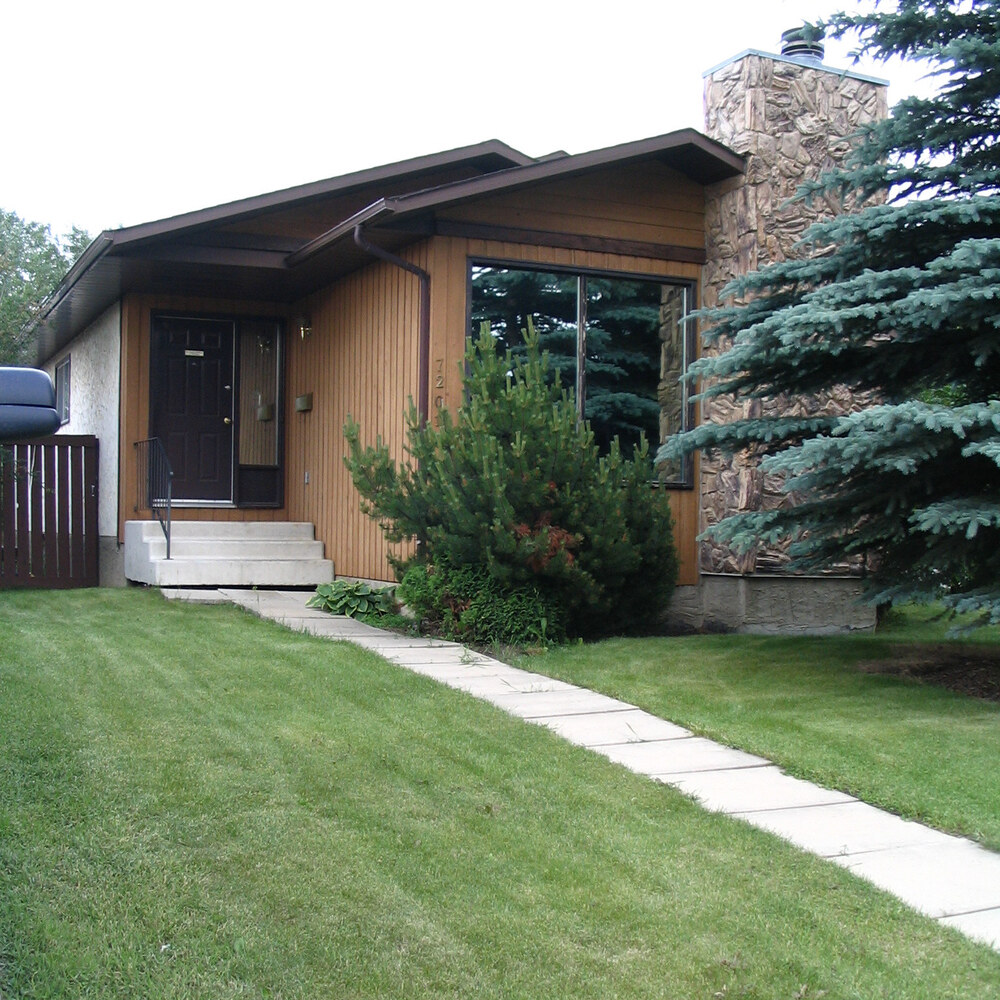

Our Story
From 11 people in a living room, to a church family today.
People's Church began in January 1981 in the living room of a home, with just 11 people at the first gathering. Since then, we've grown into a diverse church family serving the Peace Country — but our heart has never changed: everyone matters to God, and everyone matters to us.
Today, we're a multi-generational, multicultural church family — including a dedicated Korean-speaking congregation — united around one mission and one hope.
Read Our Full History →